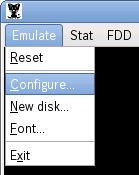
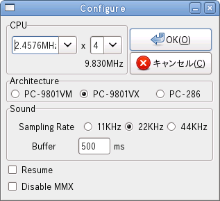

[Emulate - Configure...] を選択し、設定ダイアログを表示します。

まず、エミュレータの CPU 動作を設定します。
ねこープロジェクトIIのデフォルトでは 10MHz (PC-9801VX 相当) になっています。
処理落ちが発生したら、クロックの設定を変更してクロック数を下げてください。
続いてサウンドの設定を行います。
マシンパワーがあれば 44KHz へ変更すると良いでしょう。
Buffer の値は 処理が追い付く最低の値を設定します。
環境によりますが、速いマシンであれば 50〜100 ms、通常で 200 ms くらいが目安です。